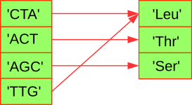

Dictionaries¶
A dictionary, or dict, is like a list, but more general. In a list, the indices have to be integers; in a dictionary they can be (almost) any type.
You can think of a dictionary as a mapping between a set of indices (which are called keys) and a set of values. Each key maps to a value. The association of a key and a value is called a key-value pair or sometimes an item.
As an example, we’ll build a dictionary that maps from codons to amino acids, so the keys and the values are all strings.

The function dict() creates a new dictionary with no items. Because dict is the name of a built-in function, you should avoid using it as a variable name.
cod2aa = dict()
print(cod2aa)
print(type(cod2aa))
{}
<class 'dict'>
The curly-brackets, {}, represent an empty dictionary.
You can als create an empty dictionary with the curly brackets ({}), just like you can create an empty list with square brackets ([]).
cod2aa = {}
print(cod2aa)
{}
To add items to the dictionary one at a time, you use square brackets:
cod2aa['CTA'] = 'Leu'
This line creates an item that maps from the key 'CTA' to the value 'Leu'. If we print the dictionary again, we see a key-value pair with a colon between the key and value:
print(cod2aa)
{'CTA': 'Leu'}
This output format is also an input format. For example, you can create a new dictionary with 3 items:
cod2aa = {'CTA': 'Leu', 'AGC': 'Ser', 'ACT': 'Thr'}
If you print cod2aa, you will see that the order of the items in the dictionary is the same. The order of items in the dictionary identical top the order of insertion.
print(cod2aa)
{'CTA': 'Leu', 'AGC': 'Ser', 'ACT': 'Thr'}
Warning
The dictionary order became available in Python 3.6 and is guaranteed from Python 3.7 onwards. If you ever use an older Python version, be aware that this order is not guaranteed and practically unpredictable. In this case you have to assume that a dictionary is unordered!
You can retrieve an item from a dictionary by using the [] square brackets. This is similar as to how you access elements from a list.
print(cod2aa['ACT'])
Thr
The key 'ACT' always maps to the value 'Thr' so the order of the items doesn’t matter.
If the key isn’t in the dictionary, you get a KeyError exception:
print(cod2aa['GGT'])
---------------------------------------------------------------------------
KeyError Traceback (most recent call last)
<ipython-input-8-de50dd413888> in <module>
----> 1 print(cod2aa['GGT'])
KeyError: 'GGT'
Note
Dictionaries are very similar to lists. The one major differences is that values in a list are always access by an integer and that value in a dict are can be accessed by a variety of key types.
Because you use keys to look up values, you can understand that keys must always be unique. On the other hand, values do not need to be unique and can be anything, including a list or a dict.
Let us add another codon (key) that maps to an already existing amino acid (value):
cod2aa['TTG'] = 'Leu'
print(cod2aa)
{'CTA': 'Leu', 'AGC': 'Ser', 'ACT': 'Thr', 'TTG': 'Leu'}
The len() function works on dictionaries; it returns the number of key-value pairs:
len(cod2aa)
4
The in operator works on dictionaries; it tells you whether something appears as a key in the dictionary (appearing as a value is not good enough).
'CTA' in cod2aa
True
'Leu' in cod2aa
False
Dictionary Methods¶
Python provides methods that operate on dictionaries. For example, keys() gives you all the keys of a dictionary, values() gives you all the values, and items() gives you all key:value pairs.
cod2aa = {'TTG': 'Leu', 'CTA': 'Leu', 'ACT': 'Thr', 'AGC': 'Ser'}
codons = cod2aa.keys()
print(codons)
dict_keys(['TTG', 'CTA', 'ACT', 'AGC'])
You see all the values of the keys in cod2aa, which are the different codons. However, you’ll als not an unfamiliar dict_keys() object. If you want to loop over all the keys, this doesn’t matter:
for codon in codons:
print(codon)
TTG
CTA
ACT
AGC
However, if you want to use this object as a list you have to explicitly convert it to list using the list() function.
codons = list(codons)
print(codons)
['TTG', 'CTA', 'ACT', 'AGC']
The values() and items() methods are very similar to keys().
amino_acids = cod2aa.values()
print(amino_acids)
dict_values(['Leu', 'Leu', 'Thr', 'Ser'])
i = cod2aa.items()
print(i)
dict_items([('TTG', 'Leu'), ('CTA', 'Leu'), ('ACT', 'Thr'), ('AGC', 'Ser')])
for codon, aa in cod2aa.items():
print(f"{codon} encodes for {aa}")
TTG encodes for Leu
CTA encodes for Leu
ACT encodes for Thr
AGC encodes for Ser
As with lists, you can use pop() to obtain and delete one key:value pair.
print("before pop:", cod2aa)
p = cod2aa.pop('ACT')
print(p)
print("after pop:", cod2aa)
before pop: {'TTG': 'Leu', 'CTA': 'Leu', 'ACT': 'Thr', 'AGC': 'Ser'}
Thr
after pop: {'TTG': 'Leu', 'CTA': 'Leu', 'AGC': 'Ser'}